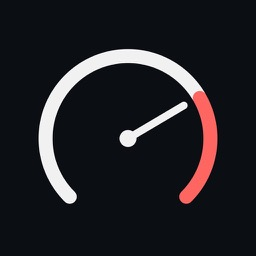
PitWall UltraConvierte tu iPhone o iPad en un cuadro de mandos en tiempo real para tus carreras en el simulador. Ponlo en un soporte junto al volante y conduce con toda la información a la vista. Turn your iPhone or iPad into a real-time dashboard for your sim racing. Put it on a mount next to the wheel and drive with everything in view.
Descargar en el App StoreDownload on the App Store iPhone y iPad · 0,99 € · Sin cuentas, sin anuncios, sin recopilar datosiPhone and iPad · €0.99 · No accounts, no ads, no data collected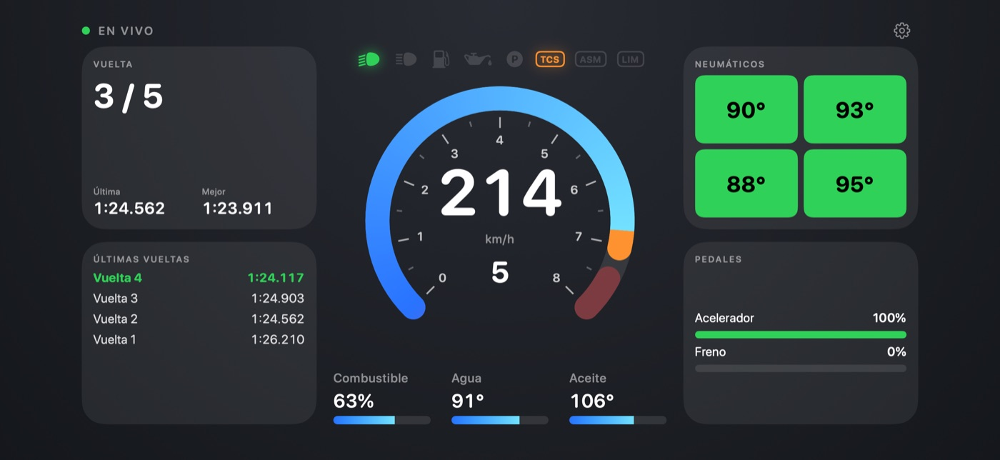
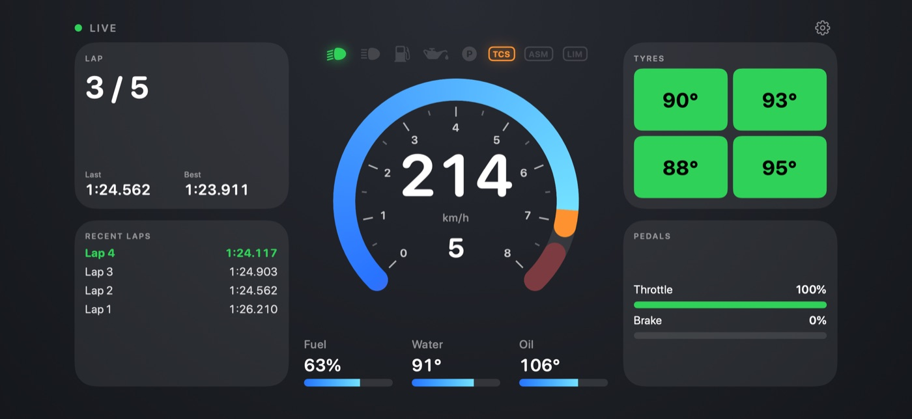
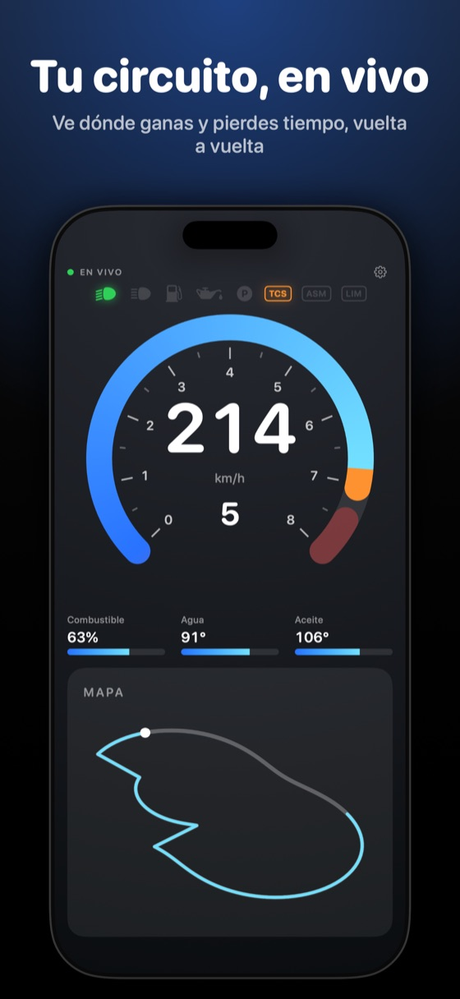
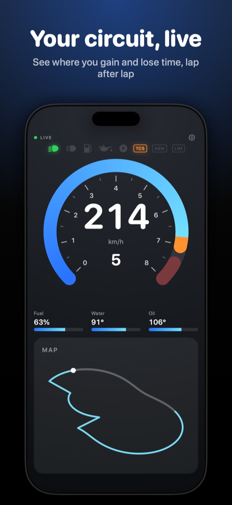
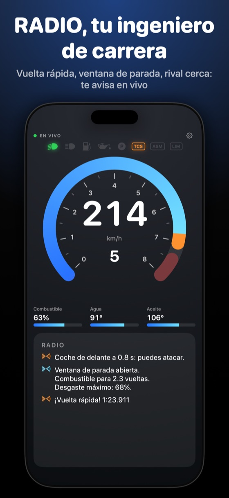
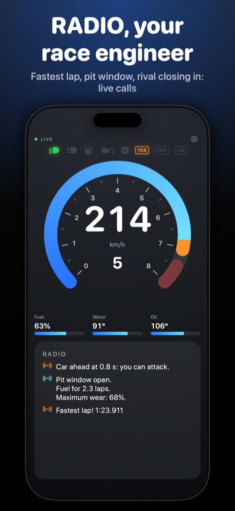
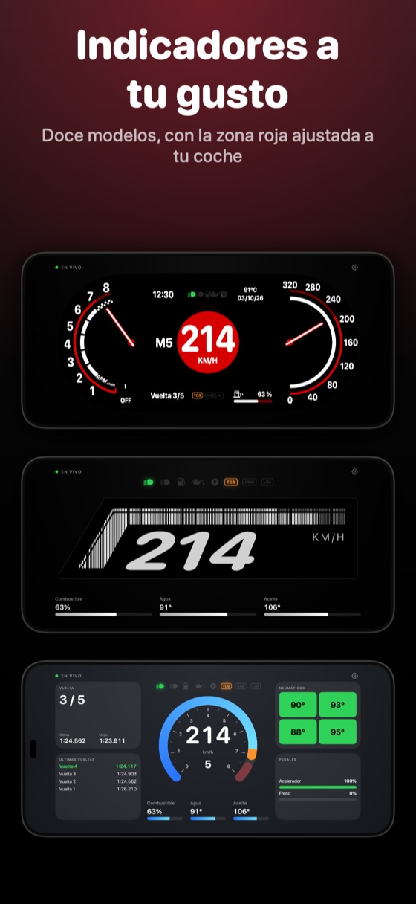
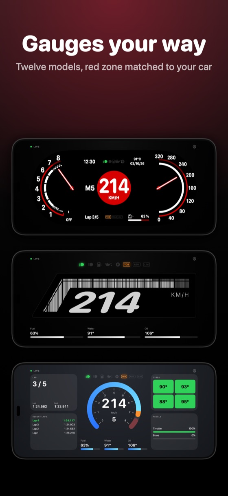
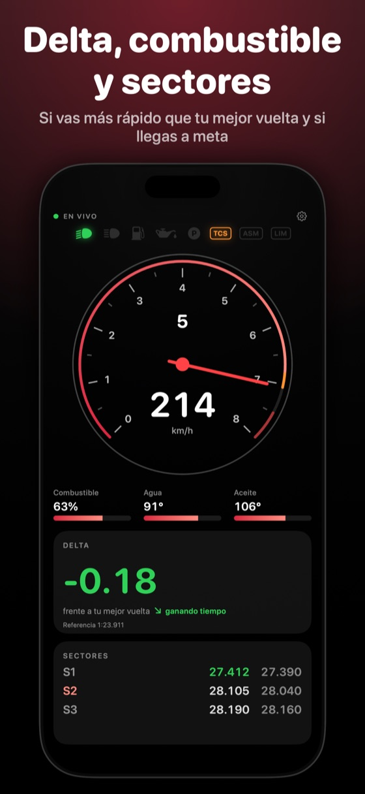
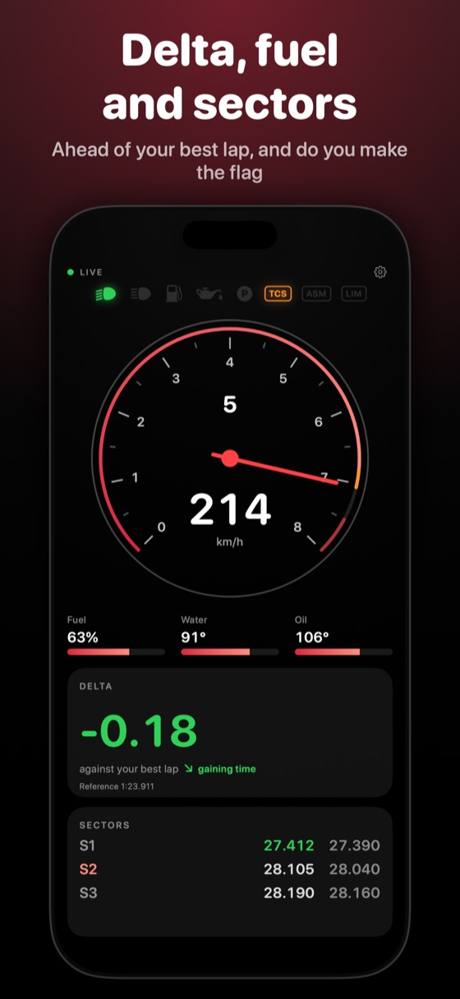
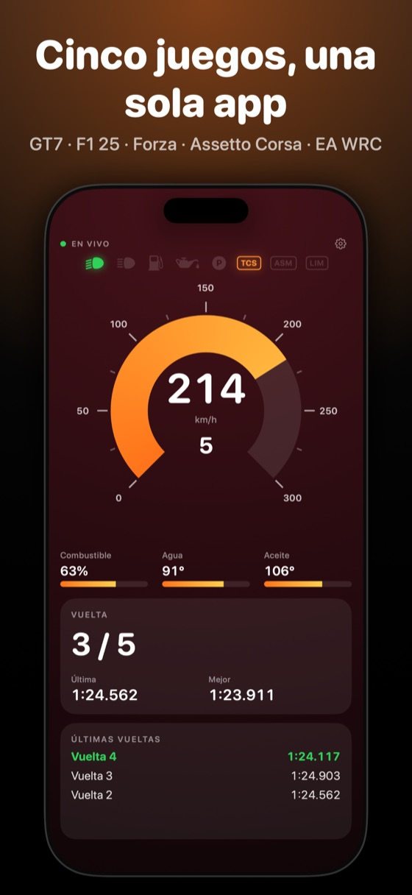
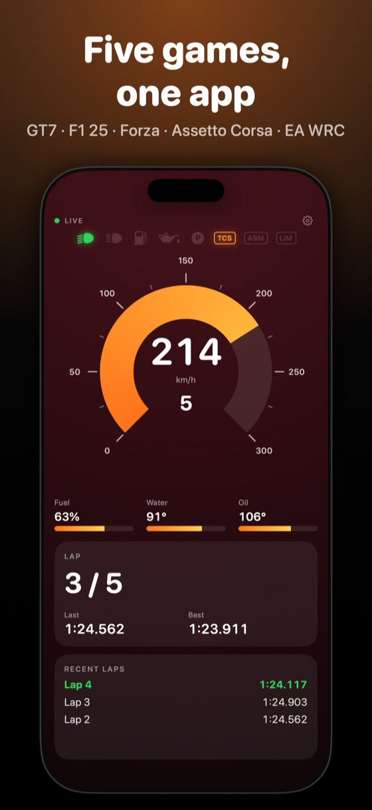
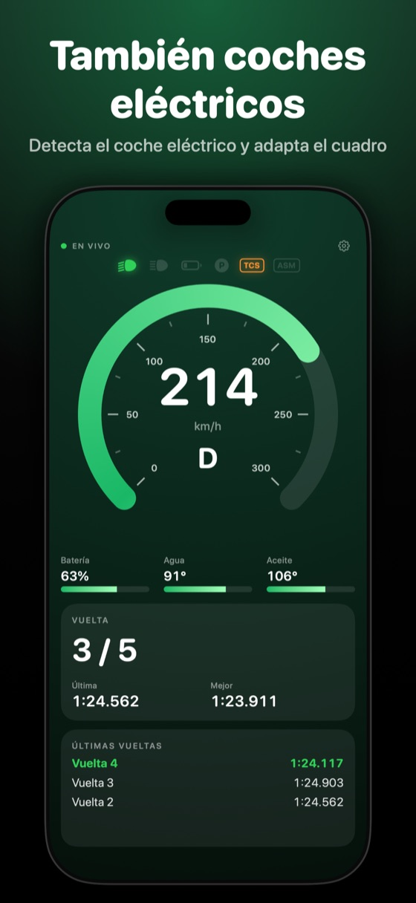
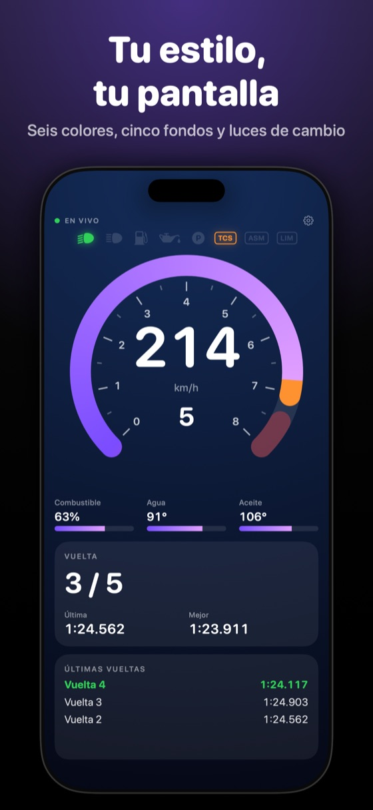
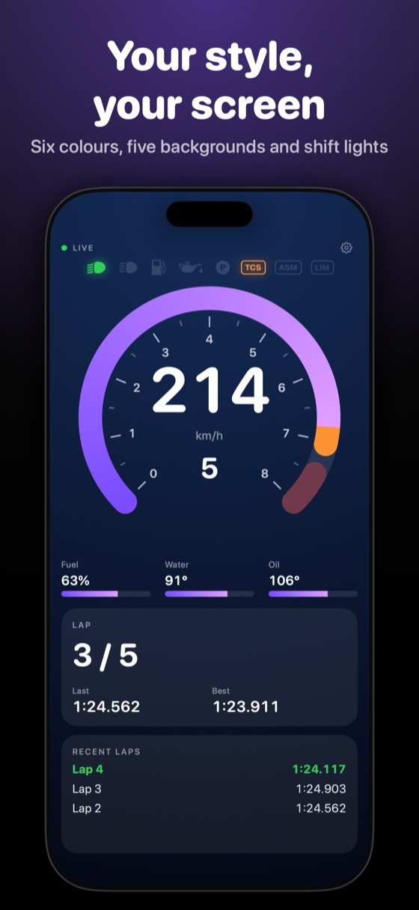
Elige entre doce modelos: anillo, sector grueso, aguja, marcas radiales, barra, segmentos y seis digitales — velocidad con barra de RPM, marcha con arco, LEDs estilo F1, siete segmentos y dos diseños propios, «Modern» y «e-Racecar». Mide RPM o velocidad, en km/h o mph, con tu color y zona roja ajustada a tu coche.Pick from twelve models: ring, thick sector, needle, radial ticks, bar, segments, and six digital ones — speed with an RPM bar, gear with an arc, F1-style LEDs, seven-segment and two original designs, “Modern” and “e-Racecar”. Measures RPM or speed, in km/h or mph, with your colour and a red shift zone matched to your car.
Desde la primera vuelta ves el trazado con tu coche en vivo, coloreado según ganas o pierdes tiempo. PitWall Ultra recuerda cada circuito y lo muestra completo la próxima vez; ponles nombre en Ajustes.From the first lap you see the circuit's layout with your car live on it, coloured by where you gain or lose time. PitWall Ultra remembers every circuit you drive and shows it complete next time; name them in Settings.
Comenta cada curva y cada vuelta y avisa en vivo de la vuelta rápida, la ventana de parada, un rival que se acerca y el semáforo de sectores. Si en la carrera no baja el combustible, no te avisa de consumo. Los datos los calcula la app; si tu iPhone lo permite, IA de Apple en el dispositivo añade un consejo breve. Se puede desactivar.Comments on every corner and every lap — where you gained or lost time, when to push or save fuel — and calls out the fastest lap, the pit window, a rival closing in and the sector traffic light live. If fuel never drops in a race, it won't warn about consumption. The app works out the facts; if your iPhone supports it, an on-device Apple AI model adds a short tip. Can be switched off.
Al terminar la carrera, la app te ofrece un PDF con tu resumen: mejor vuelta, media, tiempo total, gráfico de vueltas, trazado del circuito y la tabla completa. Guárdalo o compártelo. Se conservan las últimas 10 para volver a ellas cuando quieras.When the race ends, the app offers a PDF summary: best lap, average, total time, a lap chart, the circuit's outline and the full table. Save it or share it. The last 10 are kept so you can come back to them.
Ves si vas por delante o por detrás de tu mejor vuelta, calibrado contra el tiempo real del juego. Calcula el combustible por vuelta, cuántas quedan y si llegas a meta, y donde el juego los envía, los tiempos por sector.See whether you're ahead of or behind your best lap, calibrated against the game's own real lap time. PitWall Ultra works out fuel per lap, how many laps are left, and whether you make the flag, plus sector times where the game sends them.
Luces, largas, combustible bajo, temperaturas, presión de aceite, neumáticos calientes, freno de mano, tracción, ABS, limitador, pit lane y DRS. Cada juego muestra los que envía. Elige cuáles ver y su orden.Lights, high beams, low fuel, temperatures, oil pressure, hot tyres, handbrake, traction control, ABS, limiter, pit lane and DRS. Each game shows what it actually sends. Choose which to show and their order.
Una barra de LEDs o un marco que rodea la pantalla se enciende al acercarte al punto de cambio y parpadea en el limitador. En iPhone, una vibración te avisa.An LED bar or a glowing frame around the screen lights up as you approach the shift point and flashes at the limiter. On iPhone, a tap tells you.
A cada lado hay pantallas de paneles que recorres deslizando: vuelta y tiempos, últimas vueltas, neumáticos, pedales, motor, combustible, estrategia, delta, sectores y una traza. Decide sus paneles y orden, y guarda un ajuste por juego o coche, o compártelo con un amigo.On each side, screens of panels you swipe through: lap and times, recent laps, tyres, pedals, engine, fuel, strategy, delta, sectors, and a trace. Choose the panels and their order, and save a setup per game or car, or share it with a friend.
Con la app abierta en un iPhone conectado al juego, tu iPad se enlaza solo por la red local y muestra otra información. Detecta el coche eléctrico y adapta el cuadro. Un aviso marca cada vuelta y tu mejor. Si se corta la señal, el indicador muestra «SIN DATOS» y todo se reinicia para la siguiente carrera.With the app open on an iPhone connected to the game, your iPad links up on its own over the local network and shows other information. It detects an electric car and adapts the dashboard. A pop-up marks each lap and your best. If the signal drops, the gauge shows “NO DATA” and everything resets for the next race.
Tipografía redondeada, estándar o expandida; seis colores de acento; cinco fondos; grosor y puntas a tu gusto. En español e inglés, y compatible con VoiceOver.Rounded, standard or expanded type; six accent colors; five backgrounds; stroke thickness and ends. In English and Spanish, and works with VoiceOver.
En el iPad, el mapa del circuito a un lado y a otro la temperatura y el desgaste de cada neumático, el consumo por vuelta, las vueltas que aguanta el depósito y el margen hasta la bandera. Y si dejas el iPhone en el volante, el iPad se enlaza solo como segunda pantalla.On iPad, the track map on one side and on the other each tyre's temperature and wear, fuel use per lap, laps the tank lasts and the margin to the flag. And with an iPhone on the wheel, the iPad links up on its own as a second screen.
El desgaste de neumáticos lo envían F1 25 y Forza Motorsport; los demás juegos solo envían temperatura.Tyre wear is sent by F1 25 and Forza Motorsport; other games send temperature only.
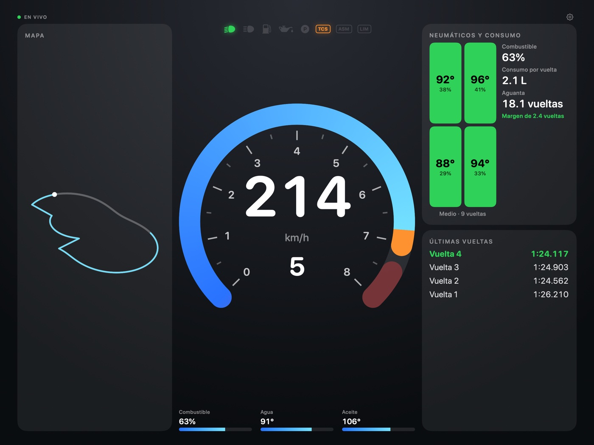
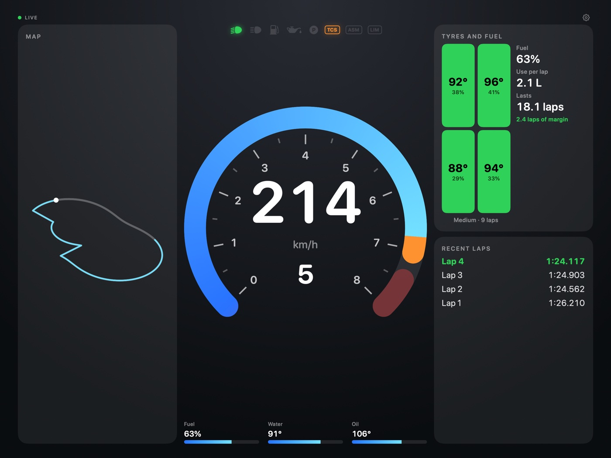
La IP de la consola en Ajustes.The console's IP address in Settings.
Telemetría UDP con la IP de tu dispositivo, que la app te muestra, y el puerto 20777.UDP telemetry with your device's IP, which the app shows you, and port 20777.
La IP del ordenador. Solo envía velocidad, RPM, marcha, pedales, tiempos y pit.The computer's IP address. It only sends speed, RPM, gear, pedals, times and pit.
Activa Data Out con la IP de tu dispositivo y el puerto que elijas.Turn on Data Out with your device's IP and the port you choose.
Telemetría UDP con la IP de tu dispositivo y el puerto 20777.UDP telemetry with your device's IP and port 20777.
Misma red que el juego. Sin juego a mano: el modo demo lo prueba todo con datos simulados. Same network as the game. No game at hand: demo mode tries everything with simulated data. Guía de conexión por juego →Per-game setup guide →
PitWall Ultra no recopila datos personales: todo ocurre dentro de tu red local, y el consejo de RADIO se genera en el propio dispositivo. Sin cuentas, sin anuncios, sin servidores.PitWall Ultra collects no personal data: everything happens inside your local network, and RADIO's tip is generated on the device itself. No accounts, no ads, no servers.